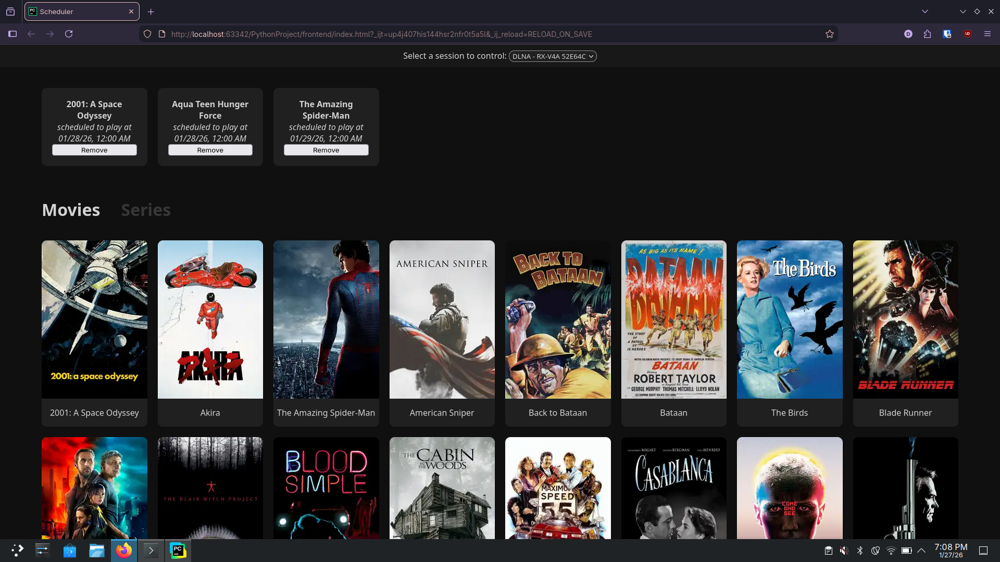
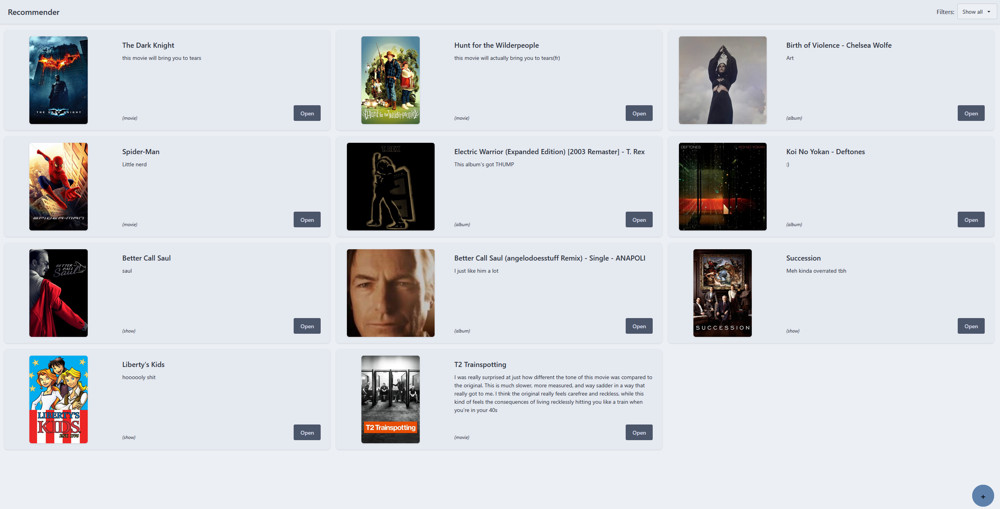
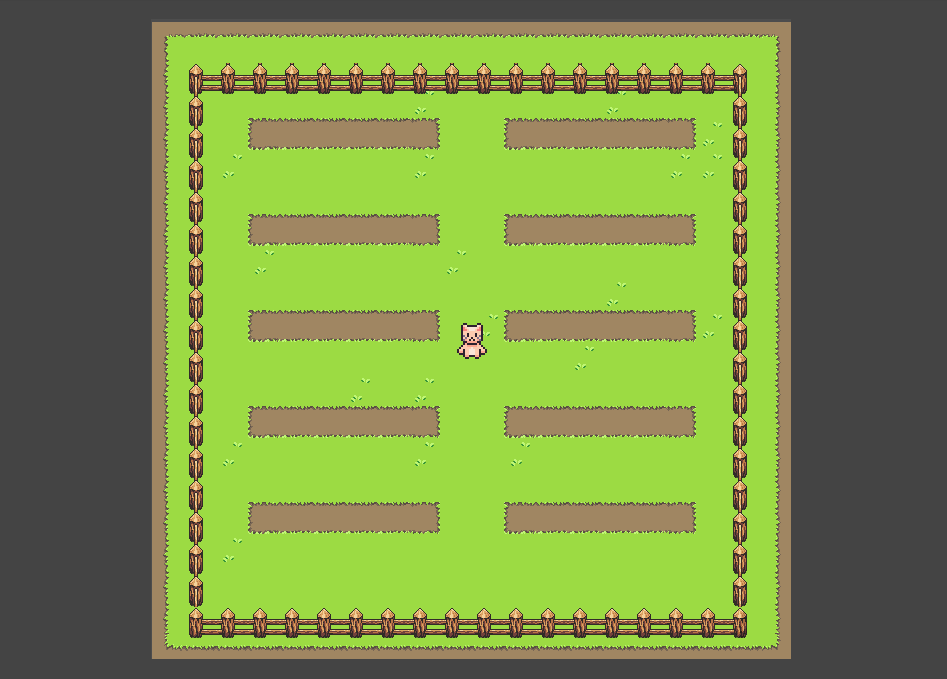

Welcome to my website! I am a senior UGA Computer Science major and Film Studies minor graduating in May 2026. Right now, my interests lie in creating things that have immediate positive impacts on people's lives. Whether it's through services designed to meet people's accessibility needs, sites that allow people to express themselves and share what they love, or experiences that provide meaningful interactions, I strive to create things that I think are genuinely useful and enjoyable for people. I have experience in full-stack development, and I love learning new technologies by taking on new projects. I am also passionate about art, especially film history.
About Me
Education:
- University of Georgia
- GPA: 3.6
- Graduating May 2026
Honors and Awards
- Dean's Merit Scholarship at Georgia College & State University
- Dean's List 2023-2025 at UGA
Languages:
- Java, Python, C, C++, Javascript, HTML, CSS, GDScript
Frameworks/Libraries:
- React, Node.js, Svelte, MongoDB, Spring, DaisyUI
Work Experience
- Chick-Fil-A Lake Dow: 2022-2025
- Chick-Fil-A Athens: 2024-Now
What I've Been Working On
-

Media Scheduler
A lightweight accessibility app built with Python and Alpine.JS. This app is designed to facilitate automated playback of movies and TV episodes to a device running Jellyfin. This is intended to allow caregivers to schedule media playback for individuals who are otherwise unable to use or navigate streaming interfaces on their own.
-

Recommender
A small, simple, and easy to use recommendation site built with Svelte, Supabase, and DaisyUI. Simply visit the site, click the plus, and recommend an album, show, or movie you like. Or, browse recommendations from other users and read what they had to say about their favorite media.
-

Garden Project
A small, interactive connection-focused experiment made with Godot and Supabase, and hosted on itch.io. Users can navigate around a virtual garden and anonymously plant flowers with messages attached for others to read. There are limited spots in the garden, and flowers expire after 24 hours.
-

Cinema E-Booking System
A group project I led where we developed a full application built for movie theaters and their customers to manage bookings and showtimes, create user accounts, and handle account information. Front-end built with React, Tailwind CSS, and DaisyUI. Backend written in Java with Spring, with a MySQL database.
-
Last.FM API Project
A small app built to get familiar with JavaFX. Users can provide the API key and secrets for their Last.FM account and see a list of their most listened to songs. Then, users can click each song to view that songs' lyrics using the Lyrist API.